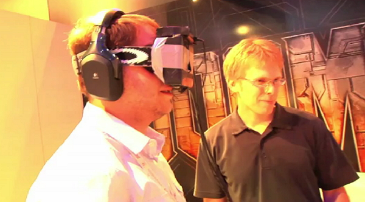

About VR
VR has been around since as early as 1957 the technology was created by Morton Heilig. Although it's explosion in popularity didn't come about until around 2011 when Palmer Luckey. He put together a makeshift prototype at the age of 18 than presented it at E3 in 2012. After this the software slowly started to take off to the point it is today. This technology is still a "new field" and as such there is much to be learned from it as well as hidden dangers we will slowly find.
